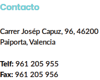
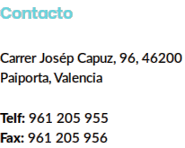
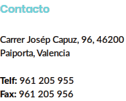
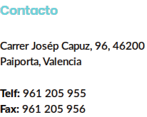

ALUMNE/A GRUP
PROFESSOR/A Horari d'atenció
Data de l'incident Hora Lloc
En aplicacio de l'article 37 del decret 39/08 sobre drets y deures, es comunica al para/mare de l'alumne la imposicio de la següent mesura correctora:
Descripcio de l'incident:
Tipificacio(3) de l'incident segons l'article 35:
La comunicacio als pares es fa pels següents mitjans: Telefon Per correu, Per mig de l'alumne, Amb compareixença del pare/mare/tutor legal.
Paiporta,dede 201
Signatura del professro/a Signatura del cap d'estudis/director
(1) El pare o la mare de l'alumne podra retirar l'aparell del dia següent de rebre esta notificacio en la direccio d'estudis.
(2) El pare o la mare de l'alumne disposa d'un termini de 10 dies a partir de rebre esta comunicacio per al preceptiu tramit d'audiencia amb el professor que ha imposat la mesura correctora. Per la qual cosa l'horari d'atencio del professor figura al costal del seu nom i el telefon de l'institut en la capçalera.
(3) Tipificacio:

 


